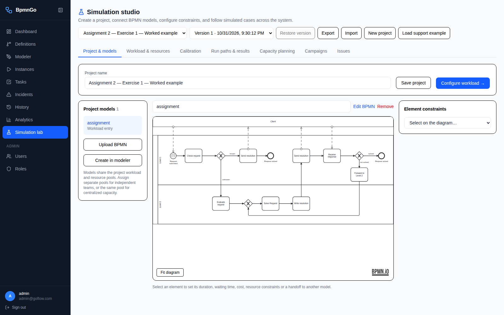
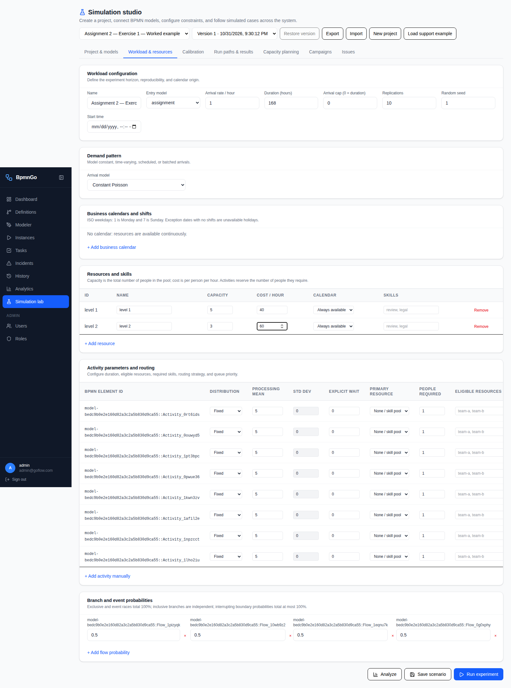
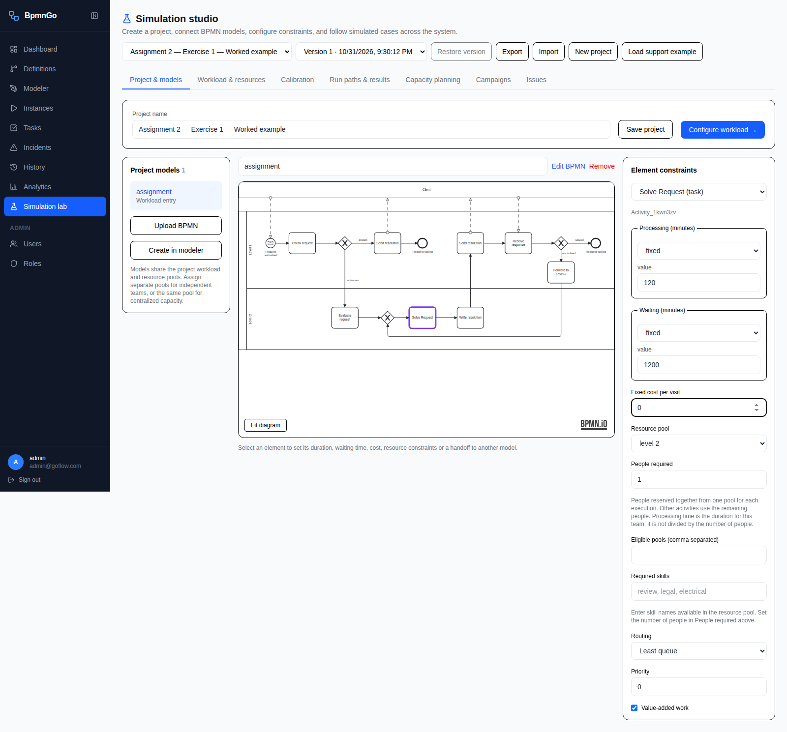
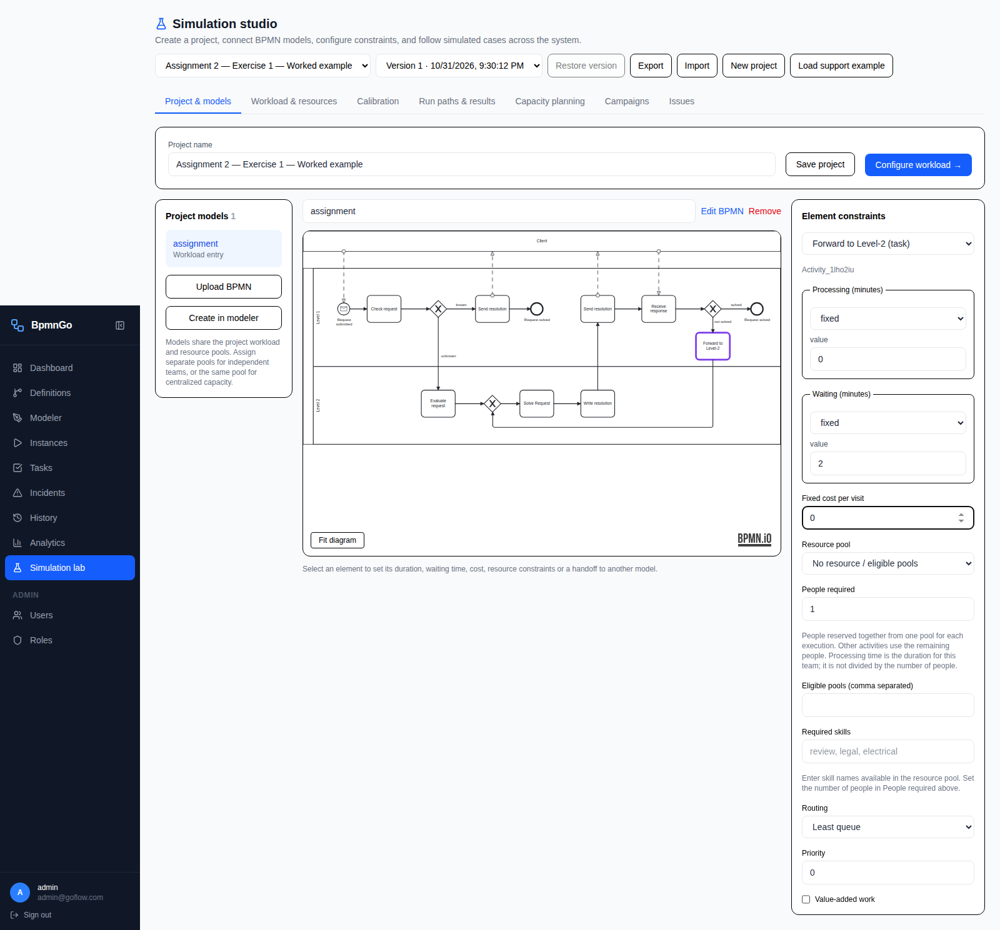
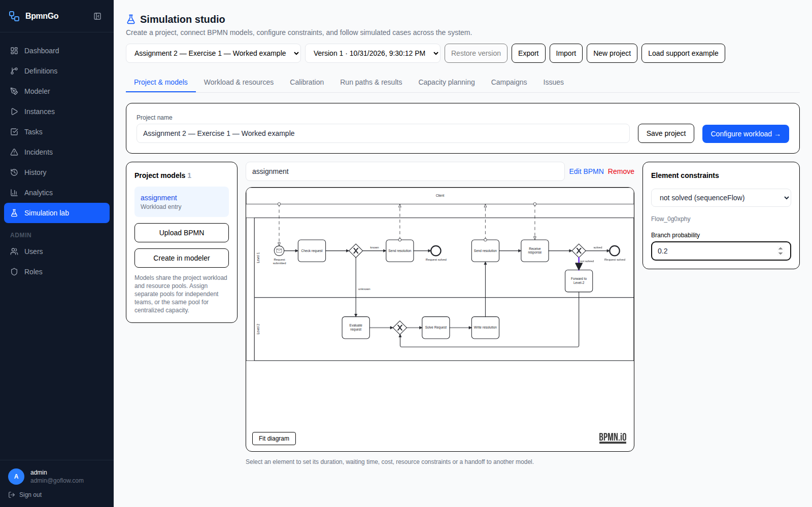
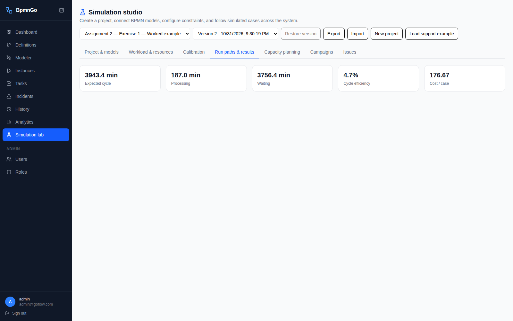

Exercise 1: from an empty project to a verified result
A completed example in your local BpmnGo. Configuration uses the assignment's mean durations, excludes handoff labor, and retains elapsed waiting time.
Watch the configuration
The recording shows the actual browser actions. Pause or scrub to review any step; the screenshots below provide readable checkpoints.
Settings reference
All times are minutes. Use Fixed distributions at the stated means for this analytical exercise, one person per staffed activity, zero fixed costs, and no required skills. Mark actual-work activities as value-added; leave the response and handoff unmarked.
| Activity | Pool | Processing | Waiting |
|---|
| Check request | level 1 | 10 | 60 |
| Send resolution — known branch | level 1 | 5 | 0 |
| Evaluate request | level 2 | 20 | 120 |
| Solve Request | level 2 | 120 | 1200 |
| Write resolution | level 2 | 20 | 0 |
| Send resolution — after writing | level 1 | 20 | 1200 |
| Receive response | None | 0 | 1200 |
| Forward to Level-2 | None | 0 | 2 |
1. Import the supplied BPMN
Project & models → New project → enter the name → Save project → Upload BPMN.

2. Configure the shared pools
Workload & resources → Add resource. Level 1: capacity 5, cost 40/hour. Level 2: capacity 3, cost 60/hour. Leave calendars unassigned: the exercise does not specify shifts.

3. Set activity duration and staffing
Project & models → select an activity in BPMN element. For Solve Request: Processing = Fixed, 120 minutes; Waiting = Fixed, 1200 minutes; Resource pool = level 2; People required = 1; Value-added work checked. Repeat for all activities using the table below.

4. Apply the Exercise 1 handoff rule
Forward to Level-2: processing 0, waiting 2, no resource, Value-added work unchecked. This preserves the two-minute elapsed handoff while excluding it from processing and labor cost as instructed in Exercise 1. Receive response also has no resource and no value-added work.

5. Configure branch probabilities
Select each outgoing branch: known = 0.2, unknown = 0.8, solved = 0.8, not solved = 0.2. The merging gateway needs no probabilities.

6. Save, reload and analyze
Save project. Reopen the saved project, select Workload & resources, then click Analyze. This exercise uses analytical expected values; Run experiment is not required. The recorded example was verified after reloading its saved settings.

What the results mean
Efficiency: 4.742% · Cost per execution: €176.67
Expected processing: 187 minutes. Expected cycle: 3943.4 minutes (65.72 hours). The UI rounds efficiency to 4.7%.
At 80% escalation and 80% resolution success, the expected number of resolution-loop visits per initial request is 0.8 ÷ (1 − 0.2) = 1. Evaluation occurs 0.8 times and the unsuccessful forwarding step 0.2 times per initial request.
Level-1 work: 10 + 0.2 × 5 + 1 × 20 = 31 minutes. Level-2 work: 0.8 × 20 + 1 × 120 + 1 × 20 = 156 minutes. Total: 187 minutes. Cost: 31/60 × €40 + 156/60 × €60 = €176.67.
Elapsed delays: 60 + 0.8 × 120 + 1200 + 1200 + 1200 + 0.2 × 2 = 3756.4 minutes. Cycle: 187 + 3756.4 = 3943.4 minutes. Efficiency: 187 ÷ 3943.4 × 100 = 4.742%.
This convention retains the two-minute handoff in cycle time while excluding it from labor, and reapplies configured waits on repeated visits. Resource counts do not add capacity-dependent queues to Analyze. To reproduce the result after opening the project, click Workload & resources → Analyze. Do not substitute simulation KPIs for these analytical figures.